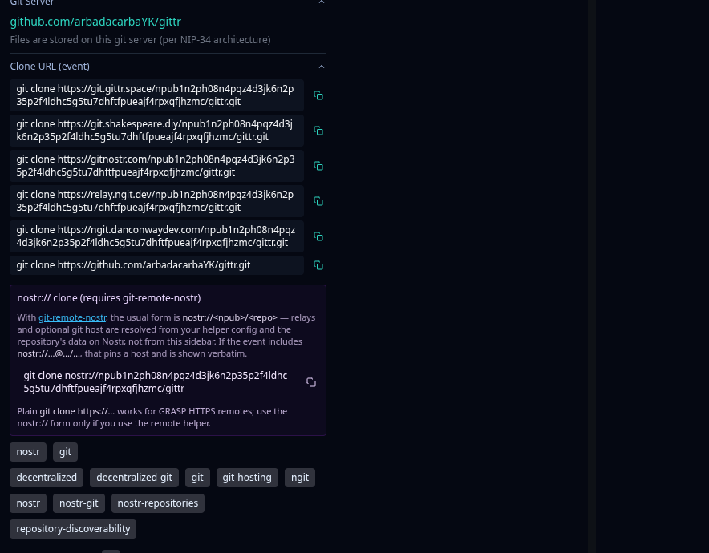
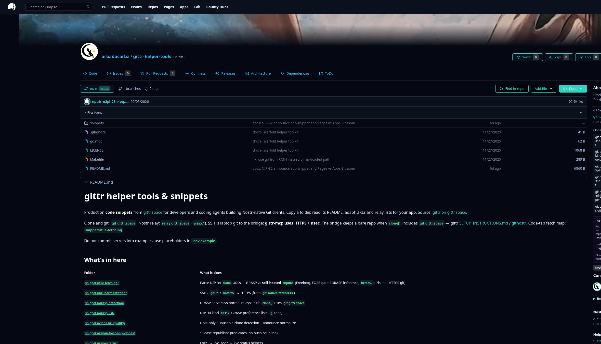
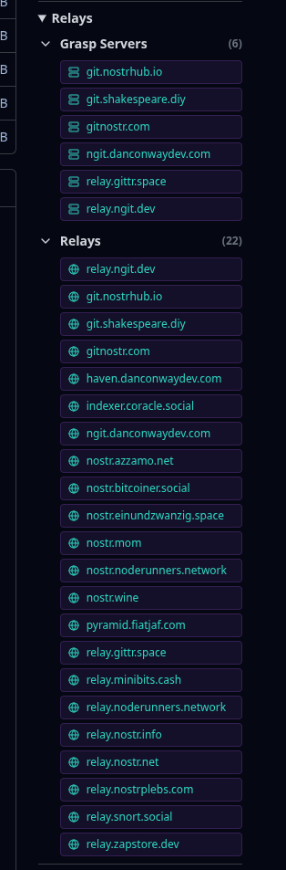
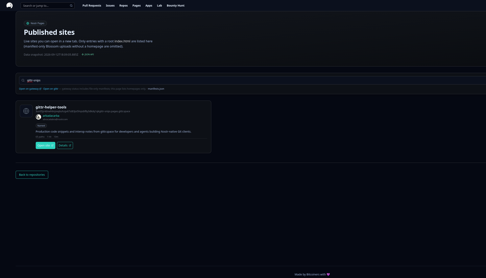
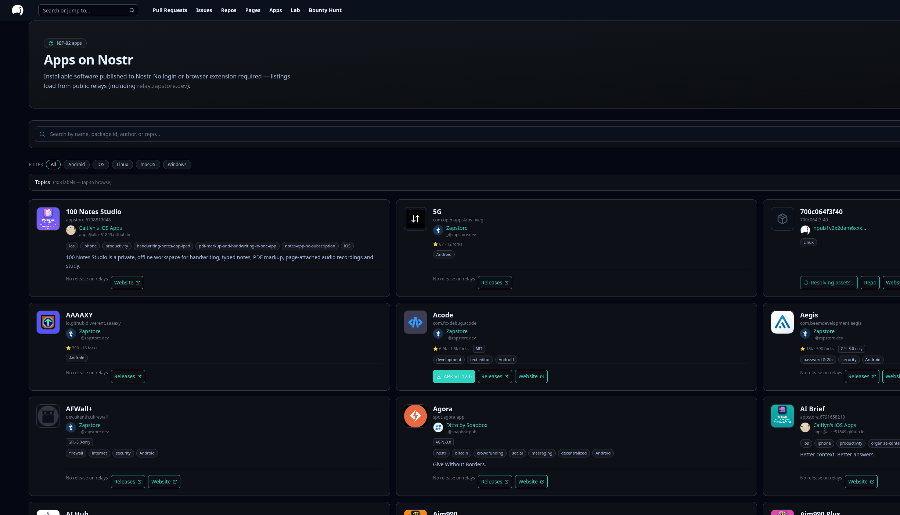
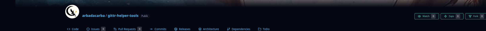

This repo · xerox
Copy-paste recipes from gittr production. Not a hosted forge. Not a git server. MIT — keep the attribution.
Nostr Page · steal the recipes
We write code
This is gittr-snips, the public Page for gittr-helper-tools: the same snippets gittr uses, plus screenshots so you can see why they exist. Copy a folder. Adapt relays. Keep the attribution. The repo README is the file list — this page is the door. This repo is not a hosted forge: copy a folder into your client.
Production code snippets from gittr.space for people and agents building Nostr-native Git clients. Copy a folder, read its README, adapt relays. Keep the attribution. MIT.
Copy-paste recipes from gittr production. Not a hosted forge. Not a git server. MIT — keep the attribution.
Issues, PRs, Pages, apps. Clone and git:
git.gittr.space. Relay:
wss://relay.gittr.space.
SSH is laptop git. gittr-mcp uses HTTPS + nsec.
Bare repos over SSH/HTTPS. Kind 52 keys. This Page only explains how to talk to that stack from your own client.
Clients that mix these up show empty PRs, a clone URL that is actually a relay, or a Page that never appears on /pages. Four piles. Four jobs. Same hostname can wear more than one hat.
Commits, trees, blobs. You clone with git clone https://….
On Nostr git these HTTPS remotes are often GRASP hosts: git server
and relay. If one advertised clone is down, try the next.
They are advertised mirrors, not a magic always-in-sync cluster.
Announcements, PRs, issues, stars, watch lists. These are events on
wss:// relays. Looking at git will never find a pull
request. Looking at a random social relay may miss the git announce.
Query both worlds on purpose.
A named static site (kind 35128). This cookbook is one
(gittr-snips). A git commit is not enough: upload
bytes, then Push Manifest. Browse
/pages. Snippet:
nip5a-gittr-pages.
Where the bytes of a Page (and optional app binaries) actually sit.
Pages use blossom.gittr.space. APKs use public Blossom
(Primal / Ditto / Haven), never Pages Blossom. Auth is kind
24242. Not git objects. Not the kind 30617
announce.

git.gittr.space/…/gittr.git — the gittr disk, not
someone else’s GRASP host. Git Server can still
show a forge source (GitHub here) when that is the
preferred tree. Clone URL (event) is the advertised
HTTPS remotes.
Kind 30617, empty content, tags only. Need a d
(repo id) and at least one full clone URL with
/npub…/repo.git. Optional 30618 for HEAD/state.
Parse every value on the clone tag (not only
tag[1]). Race remotes. Classify GRASP vs GitHub vs
someone’s NAS. Skip htree:// if you only speak HTTPS git.
Same name can be git + wss. relay.gittr.space is the
Nostr relay; git bytes for gittr live on git.gittr.space.
Do not advertise the relay hostname as a clone.
Kinds 1621 / 1618 / 1111 on
relays. Subscribe wider than “our one default relay” or you will
show empty threads that other clients can see.
Browser extension is NIP-07. Phone / Amber is NIP-46. Lightning wallet control is NIP-47 (NWC). Three protocols. Three secrets. Never put an nsec in the page.
Stars, watch lists, zaps, issue bounties, a static Page, an app listing. Each has a snippet. Copy only what your product needs.

const event = {
kind: 30617,
content: "", // NIP-34: empty on purpose
tags: [
["d", "my-repo"],
["name", "My Repository"],
["description", "A cool repo"],
[
"clone",
"https://git.gittr.space/npub1…/my-repo.git",
"https://relay.ngit.dev/npub1…/my-repo.git",
],
["relays", "wss://relay.gittr.space", "wss://relay.ngit.dev"],
],
};
// Parsers: read EVERY value after index 0 on clone/relays.
// Older events used one tag row per URL — accept both.export const GRASP_SERVERS_FOR_PUSHING = [
"git.gittr.space", // git bytes for gittr
"relay.ngit.dev",
"gitnostr.com",
"ngit.danconwaydev.com",
"git.shakespeare.diy",
];
// NOT a clone host:
// "relay.gittr.space" ← Pyramid wss relay only
const isGrasp = isGraspServer("wss://relay.ngit.dev");
// true: git HTTPS + Nostr on related hostnames
relay.gittr.space can still appear under Grasp
Servers in this UI — it is the Pyramid wss relay, not a
clone host. Do not put it on a clone tag; git bytes
for gittr live on git.gittr.space.

export type GitSourceType =
| "nostr-git" // GRASP https://host/npub/repo.git
| "github" | "codeberg" | "gitlab"
| "self-hosted-git" // Gitea / NAS / Freebox
| "hashtree" // htree:// — not HTTPS git
| "unknown";
// Host-only clones (https://git.example.com with no path)
// break other clients. Normalize before you publish.
// See snippets/clone-url-quality{
"kind": 35128,
"content": "",
"tags": [
["d", "gittr-snips"], // 1–13 chars (not the full repo slug)
["path", "/index.html", "<sha256>"],
["path", "/site.css", "<sha256>"],
["server", "https://blossom.gittr.space"],
["title", "gittr-snips cookbook"],
["relay", "wss://relay.gittr.space"]
]
}
// 1. Put index.html in the repo root
// 2. Upload bytes to Pages Blossom
// 3. Publish the manifest
// Apps/APKs do NOT go to blossom.gittr.space
gittr-helper-tools (too long for a NIP-5A
d tag) and not helper-tools.

32267 /
30063 / 3063. Default download URL is the
forge Release. Optional pin to public Blossom — never Pages Blossom.
// 32267 application (d = app id, name, repository)
// 3063 file asset (x = sha256, url, version, m = MIME)
// 30063 release (d = appId@version)
// Default url = GitHub/Codeberg/GitLab Release asset
// Optional pin hosts (first success wins):
// blossom.primal.net
// blossom.ditto.pub
// haven.danconwaydev.com
// blossom.gittr.space is Pages-only. Keep APKs out.{
"kind": 9806,
"content": "{\"amount\":50000,\"status\":\"paid\",\"lnurl\":\"…\"}",
"tags": [
["e", "<issue-event-id>", "", "issue"],
["repo", "<entity>", "<repo-name>"],
["status", "paid"]
]
}
// Discovery on relays. Settlement on the host.
// PRs are kind 1618. Issues are 1621.
// Comments / threads often 1111.
Issues and PRs are Nostr events, not git objects. Funded issues
show up on
gittr.space/bounty-hunt
and on the repo Issues tab. PRs are kind 1618;
issues are 1621.

10018
list. Star is kind 7 on the kind
30617 announcement (same header row; sign in to use
it). Neither lives in Git Server / Clone URL —
that is a different recipe.
// Star = kind 7 reaction on the 30617 event id ("+")
// Watch = kind 10018 replaceable list
// a tags: "30617:<owner-hex>:<d>"
// Star needs the announcement event id from a WIDE
// relay set. Watching only needs the a-tag coordinate.
// Auth: NIP-07 in the browser, NIP-46 for Amber.
Titles match the recipes above. Each card opens that folder on gittr
(README + snippets) in a new tab. No
@/ imports. Stub key storage yourself. Filter by mood:
Product → recipe:
Watch → nip25-stars-nip51-following ·
Bounty → nip34-issue-bounties ·
Page → nip5a-gittr-pages ·
App → nip82-software-announce ·
Paywall → nip34-push-paywall ·
NWC → nip47-nwc ·
Amber → nip46-remote-signer.
snippets/file-fetching
GRASP, forges, NAS, htree://.
snippets/url-normalization
SSH / git:// / nostr:// → HTTPS.
snippets/grasp-detection
Known GRASP domains vs ordinary relays. Push allowlist.
snippets/grasp-list
Kind 10317 preferred GRASP hosts (g tags).
snippets/clone-url-quality
Host-only / localhost / LAN clones that break other clients.
snippets/repair-host-only-clones
“Please republish” predicates. No sneaky push coupling.
snippets/filter-display-clone-urls
Hide extra GRASP mirrors when a primary host exists.
snippets/filter-grasp-mirror-pollution
Strip mirror npub/hex roots from file trees.
snippets/repo-status
Local → live_soon → live badges.
snippets/nip34-repository-events
Build/parse 30617 / 30618. Multi-value tags.
snippets/nip34-push-paywall
Optional push_cost_sats on the announce.
snippets/nip34-issue-bounties
Kind 9806 offer/take + LNURL-withdraw.
snippets/nip25-stars-nip51-following
Star (kind 7) and Watch (kind 10018).
snippets/nip46-remote-signer
Amber / bunker pairing. No nsec in the page. Kind 24133.
snippets/nip47-nwc
Wallet Connect pay_invoice / balance. Kind 23194. Not NIP-46.
snippets/nip5a-gittr-pages
Named nsite. You are looking at the result. Kind 35128.
snippets/nip82-software-announce
Zapstore-shaped app events from a forge Release. Blossom pin is optional.
snippets/markdown-media-handling
README images, embeds, relative links that don’t 404.
snippets/nip-c0-code-snippets
Kind 1337 snippet events + renderer.
snippets/wot-trust-badges
Viewer-relative Web of Trust hop labels.
snippets/todos-discussions-kanban
How gittr does ToDo / Kanban today + future NIP notes.
snippets/github-oauth-writeback
Plan only: forge write-back. Not a NIP.
Tap a pill to jump to the recipe or the matching folder in the drawer.